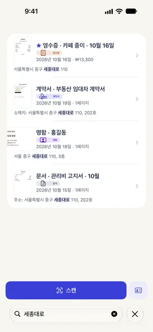

명함 스캔해서 아이폰 연락처에 저장하기
최종 수정 2026-10-22
명함은 지갑에 넣어 두면 정작 연락할 때 찾기 어려워요. Paperkeep으로 명함을 스캔하면 종류가 '명함'으로 정해지고, 읽은 내용으로 미리 채운 새 연락처 화면을 열 수 있어요. 마지막 확인과 저장은 직접 하며, 이 기능에는 요금이 붙지 않아요.
먼저, iOS 기본 기능으로 하는 방법
- 연락처 앱에서 '+'를 눌러 명함을 보며 이름과 번호를 직접 입력하는 게 가장 기본적인 방법이에요.
- 지원되는 iPhone에서는 카메라로 명함을 비추고 화면 속 전화번호나 이메일을 길게 누르면 연락처에 추가하는 메뉴가 나오기도 해요.
- 다만 항목을 하나씩 처리해야 하고, 명함 이미지 자체는 남지 않아요.
Paperkeep으로 하는 방법
- '스캔'을 누르고 명함을 화면 가운데에 두고 찍어요. 양면 명함이라면 뒷면도 이어서 찍고 '저장'을 눌러요.
- '새 스캔' 화면에서는 '사진' 필터가 로고와 색을 살려 줘요. 확인했으면 '저장'을 탭해요.
- 명함 문서를 열면 종류가 '명함'으로 표시되고 '연락처에 추가' 버튼이 보여요. 혹시 영수증이나 문서로 분류됐다면 '종류'를 눌러 '명함'을 고르면 버튼이 나타나요.
- '연락처에 추가'를 누르면 이름, 회사, 직함, 전화번호, 이메일 등이 채워진 새 연락처 화면이 열려요. 틀린 칸을 고친 뒤 '완료'를 눌러 저장해요.

이 문서만의 팁
- 명함은 작아서 어두운 테이블 위에 놓아야 가장자리를 잘 찾아요. 흰 책상 위의 흰 명함은 잘리기 쉬워요.
- 세로쓰기나 디자인이 독특한 명함은 이름이 다른 칸에 들어갈 수 있으니, 저장 전에 칸마다 확인하세요.
- 스캔한 명함 이미지는 Paperkeep의 '스마트 폴더' → '명함'에 남아서, 뒷면에 적어 둔 손글씨 메모까지 나중에 다시 볼 수 있어요.
곧 App Store에 출시돼요.